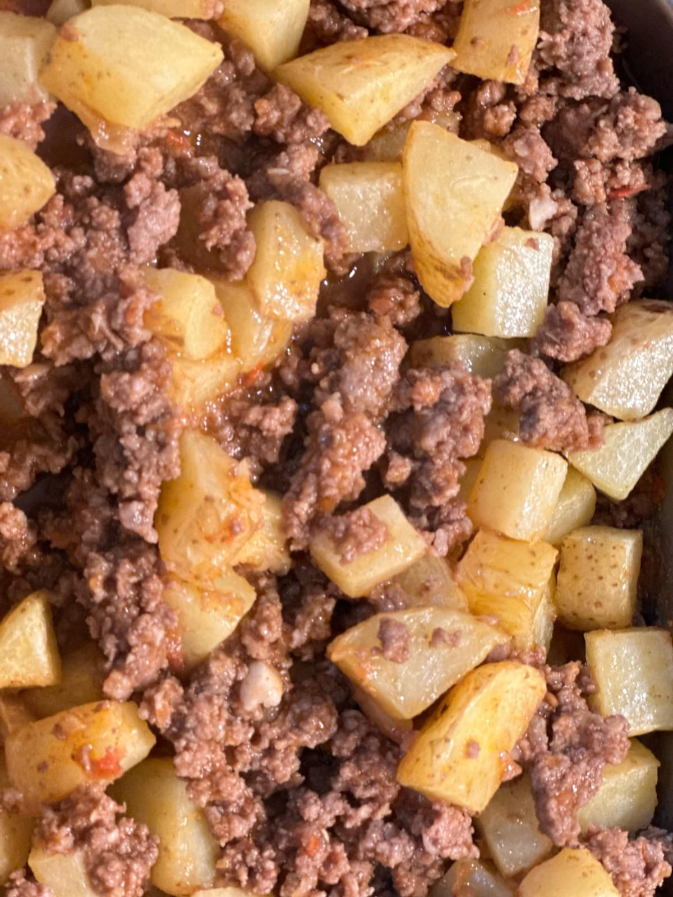

Las papas con carne molida son un platillo casero muy popular en la cocina mexicana. Combinan la suavidad de las papas con el sabor de la carne sazonada y diversos ingredientes que aportan aroma y color. Es una preparación sencilla, nutritiva y perfecta para acompañar con tortillas de maíz